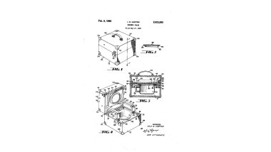

Portable Potty Chair
Mrs. Carter's innovative spirit shone through when she tackled the challenge of traveling with her large family. In the early 1950s, she invented a portable potty that could double as a nursery chair, solving the problem of bathroom breaks on the road. This invention demonstrated her creativity and practical problem-solving skills, reflecting her ability to adapt to and overcome obstacles.
On February 6, 1960, Iula Carter successfully completed the nursery chair and received the paten for her invention. Despite facing rejection when trying to sell her invention to Rike's department store due to racism, as well as limited funds which caused production of her portable nursey chair to be harder than imagined, Iula was able to redirect her focus towards advoating for youth empowerment and creativity. She inspired children to think outside the box and find inventive solutions to problems, guiding them through the patenting process to protect their ideas.
